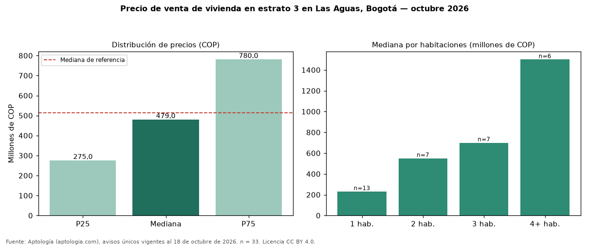

Precio de venta de vivienda en estrato 3 en Las Aguas, Bogotá — octubre 2026
COP 479 millones es la mediana de venta de vivienda en estrato 3 en Las Aguas, Bogotá, según 33 avisos únicos. Frente a toda la oferta de venta en Las Aguas (COP 514 millones), la diferencia es de 7 % por debajo. El rango intercuartílico va de COP 275 millones a COP 780 millones (razón 2,8). Por metro cuadrado, la mediana es COP 6.833.333/m² (+3 % frente a COP 6.663.786/m²). Cruzando con la oferta de arriendo equivalente, la rentabilidad bruta implícita es 8,7 % anual. Por habitaciones: 1 habitación, COP 230 millones (n = 13); 2 habitaciones, COP 550 millones (n = 7); 3 habitaciones, COP 700 millones (n = 7); 4 o más habitaciones, COP 1,50 mil millones (n = 6). El área mediana es 82 m² (referencia: 84 m²). Datos abiertos CC BY 4.0 de Aptología; fuente y búsqueda de inmuebles: https://www.aptologia.com/estrato-de/bogota/las-aguas. Archivos: PDF de 2 páginas, CSV con las cifras y gráfica PNG.

| Avisos únicos | 33 |
|---|---|
| Percentil 25 | COP 275.000.000 |
| Mediana | COP 479.000.000 |
| Percentil 75 | COP 780.000.000 |
| Mediana por m² | COP 6.833.333 |
Fuente: avisos vigentes de portales inmobiliarios recopilados por Aptología, deduplicados (mínimo 30 avisos únicos por celda). Precios pedidos, no cerrados. Fecha: 2026-10-18.